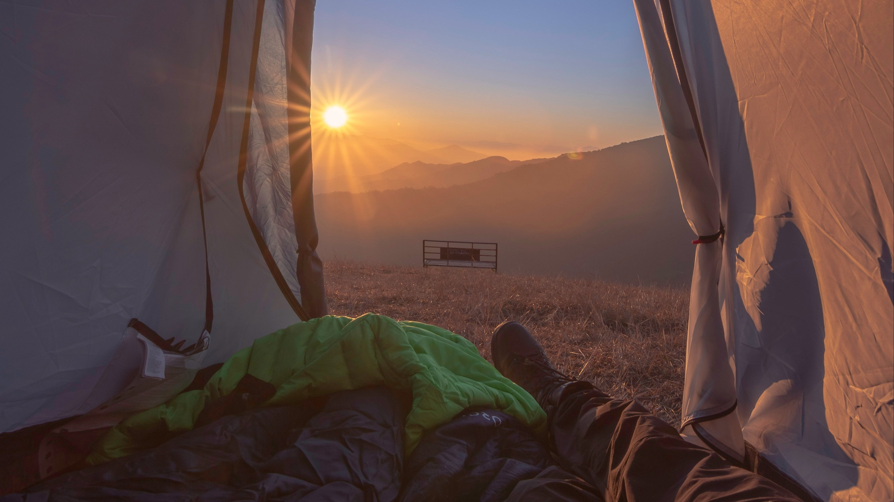

Navegação GPS
Garmin eTrex 10 GPS (Mapa do Mundo)
GPS Garmin GPSMAP 66i
GPS NAVIGATOR GARMIN GPSMAP 64s
Descrição da Seção: Navegação GPS
Navegadores de GPS - inteiro world num só dispositivo. Navegação com este equipamento portátil é fácil. Navegadores de GPS tipo BUY segue todo o turista e desportista sério cujo perfil está relacionado com a orientação, megápolis e aqueles que querem saber sempre onde está.
- >b>Navegadores turísticos (portáteis); - sports GPS navigators; - car navigator for car (JPS navigator com funções adicionais); - >b> navegação em GPS para motociclos.
Ask you, why should I buy a navigator? Que navegador é melhor? Se você possui um carro ou motocicleta, preste atenção a relatórios sobre GPSnavigadores os dois últimos tipos. Têm funções incorporadas de traçar e lembrar o percurso, encontrando o ponto-alvo no mapa. GPRS navigator pode obter dados de tráfego.
Venda >>b>>GPSNavigadoresPortátil InternetPortátil InternetPortátil Muito view of GPS navigators enfatiza que os dispositivos portáteis funcionam com mapas topográficos detalhados da área. Alguns aparelhos GPS turísticos estão equipados com um altímetro barométrico e uma bússola magnética.
Acessórios para navegadores GPS estão disponíveis em nós.
Você ainda está pensando, onde comprar um navegador? Loja online "Na fogueira" vende GPS navegadores, preços que as pessoas gostam. Navegadores GPS baratos em Kiev e com a entrega dentro da Ucrânia você pode comprar todos os tipos existentes.
Satélite Sistema de Navegação por Satélite de "By the fire" - fácil e disponível!

Equipamento turístico numa loja online, produtos para turismo e recreação na loja online de Kiev, produtos para campismo e preço de recreação activa , venda de produtos turísticos .
Buy travel gear
.O turismo moderno pode ser tão confortável que será difícil distingui-lo de umas férias no campus. Vá lá! Muitos de vós responderão e não acreditarão nestas palavras! É o seu negócio, mas nós, uma equipa de iniciativa de criadores da maior loja online "U Kostra", sabemos do que estamos a falar! Nós somos o tipo de pessoas que gostam de recreação e turismo, da vida na natureza e de outras atrações deste tema. Mas as nossas caminhadas são sempre confortáveis e seguras, graças ao equipamento turístico necessário. Criámos esta secção para os amantes do descanso confortável na natureza!
Que tipo de artigos de viagem e lazer posso comprar na loja online?
Itac, para relaxar no campo com conforto, deve prestar atenção a produtos de viagem como "Turista": sacos de dormir, colchões, equipamento a gás, aquecedores, tendas, bio-ilhas, sapatos de turismo, etc. д. Para melhor orientação na área, compre navegação por GPS, bússolas, walkie-talkies portáteis, luzes de longa distância, etc. Além disso, para a comida durante a caminhada pode comprar uma carcaça de qualidade e muito saborosa, conjuntos de piquenique, grelhadores, etc. Esta não é a lista completa de equipamento de viagem útil, que pode comprar a preços acessíveis visitando a nossa loja online. Assim, tendo tudo por segurança e conforto, estará sempre de bom humor, porque não há desconforto turístico que não ameace! No nosso site você pode comprar não só coisas interessantes e úteis para recreação, mas também estocar com um verdadeiro clima de acampamento. Faça as suas perguntas pelo telefone ou através do formulário de feedback! Lembre-se, se precisar urgentemente de um produto caro, mas a situação financeira é um pouco desanimadora - não desespere! "No Bonfire" oferece a compra de bens em parcelas em condições favoráveis. Estas e outras questões para uma consulta detalhada, pergunte ao nosso gerente!